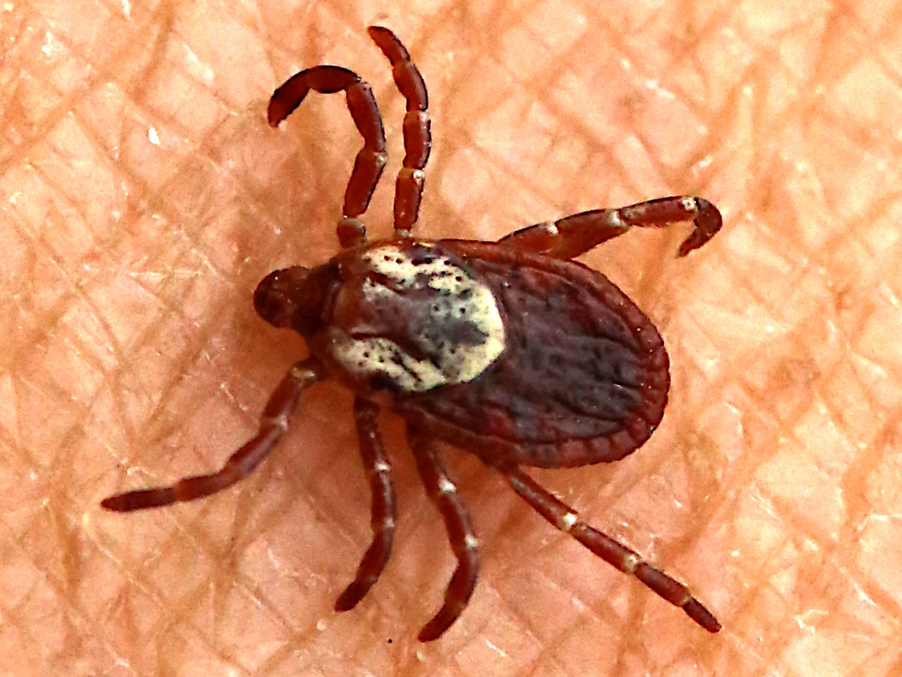
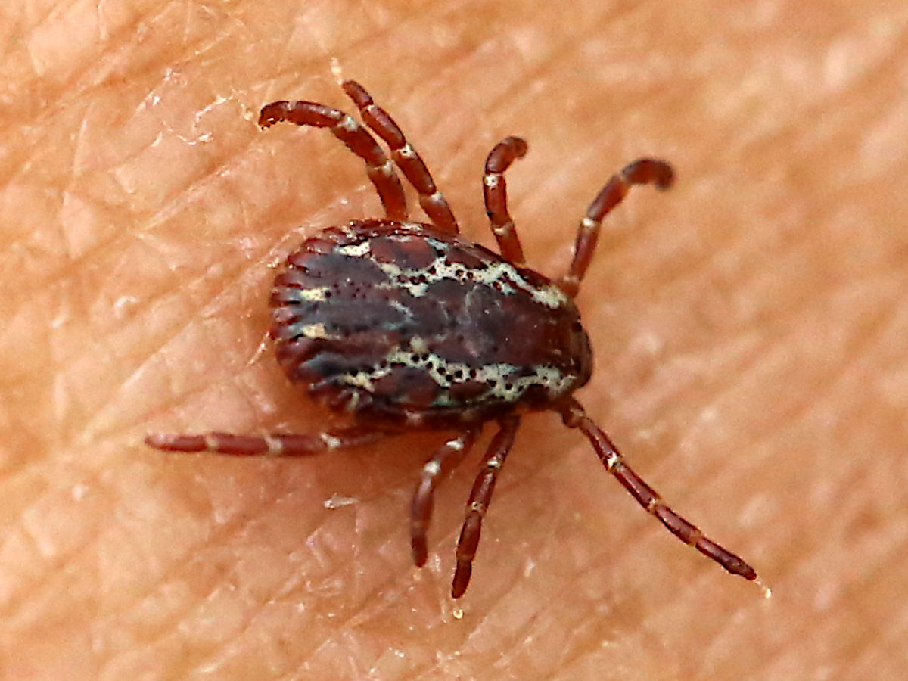

American Dog Tick
Dermacentor variabilis
- Also called
- Wood tick, Dermacentor variabilis
- Kind
- insect
- Native to Vermont
- yes
- Legal status
- Not regulated. Common throughout Vermont. (checked 2026-11-01)
Pictures


Names
American dog tick (also called the wood tick), Dermacentor variabilis. A tick is an arachnid (related to spiders and mites), not an insect; this library files it with the insects and other small animals.
Range and habitat
Throughout Vermont, mostly in grassy fields and areas with little tree cover (Health Department table). CDC says it is widely distributed east of the Rocky Mountains.
How to identify (by season; look-alikes and the key difference)
From the photographs in this note, not from a page's wording: the adult female has a large cream-white patch just behind the head on an otherwise dark red-brown back, and the male has cream-white lines and flecks across the whole back shield; the legs in both photographs have pale bands at the joints. The blacklegged tick's back shield in Blacklegged Tick is plain dark, without this pale patterning. The sources read give no size in words.
Through the year
Dates are typical for Vermont and shift with elevation and year; "approximate" means the source gave a season and the dates are a translation of it.
| When | What | Look for | What to do | Dates |
|---|---|---|---|---|
| Apr 1 to Sep 30 | adult (watch) | Active from April through September (Vermont Department of Health and Agency of Agriculture). CDC says the adult females are the stage most likely to bite people, with the highest risk in spring and summer. | Check yourself, clothing and pets after time in grassy fields and edges. | stated |
Signs on the land (tracks, scat, browse, nests, holes, calls)
Not a sign on the land: ticks are found on people, pets and animals. The Agency of Agriculture calls it a common pest on dogs and cats.
Role in the forest (what it eats, what eats it, what it needs)
It feeds on blood. CDC says adult females are the ones most likely to bite people. The sources read give no hosts for the other stages and no Vermont disease for this tick.
What helps it thrive (not something to encourage; this is what it needs, so you know where it is)
The Health Department table gives grassy fields and areas with little tree cover as its habitat, which is different from the blacklegged tick's wooded habitat. The sources read say nothing more about what it needs (host animals, humidity or soil).
Managing for it (habitat practices) and living with it (conflicts and damage)
The sources read give no landowner management for this tick. For people and pets, the Health Department's prevention page says the best approach is to avoid tick habitat in spring through fall (it names wooded and brushy areas); if you cannot, use an EPA-registered insect repellent, wear long pants, long sleeves and long socks, check your body, clothing, gear and pets, and shower soon after coming inside. Removal steps are on a page the Department links ('Prevent Tick Bites & Tick Bite Illnesses'), which was not read.
See also Preventing Tick and Biting Fly Bites in the Woods for the full protect, check, remove and watch steps.
Legal status
None found.
Sources
- Vermont Department of Health, Tick activity in Vermont: https://www.healthvermont.gov/disease-control/tick-bite-illnesses/tick-activity-vermont (read 2026-11-01)
- Vermont Department of Health, Tick bite illnesses (prevention): https://www.healthvermont.gov/disease-control/tick-bite-illnesses (read 2026-11-01)
- Vermont Agency of Agriculture, Ticks: https://agriculture.vermont.gov/public-health-agricultural-resource-management-division/plant-health-and-pest-management/ticks (read 2026-11-01)
- CDC, American dog tick: https://www.cdc.gov/ticks/surveillance/AmericanDogTick.html (read 2026-11-01)
What this page is based on
Kind of source: primary-agency (Vermont Department of Health, Agency of Agriculture and Fish & Wildlife pages, summarizing fetches)
What was read: Vermont Department of Health 'Tick activity in Vermont' table and 'Tick bite illnesses' page; Vermont Agency of Agriculture ticks page; CDC American dog tick page (all summarizing fetches, 2026-11-01). None of them describes the tick's appearance in words, and the CDC page gives no hosts or diseases: the identification below is from the two photographs. The statement that human disease from this tick is extremely rare in Vermont is from a search summary of Health Department pages, not from a page read.
Last checked: 2026-11-01
Vermont land and forest reference, built 2026-11-05. Rules and dates here are summaries, not legal advice; dates shift with elevation and year. Photo and recording credits · Note: _reference/US-VT/Species/American Dog Tick.md